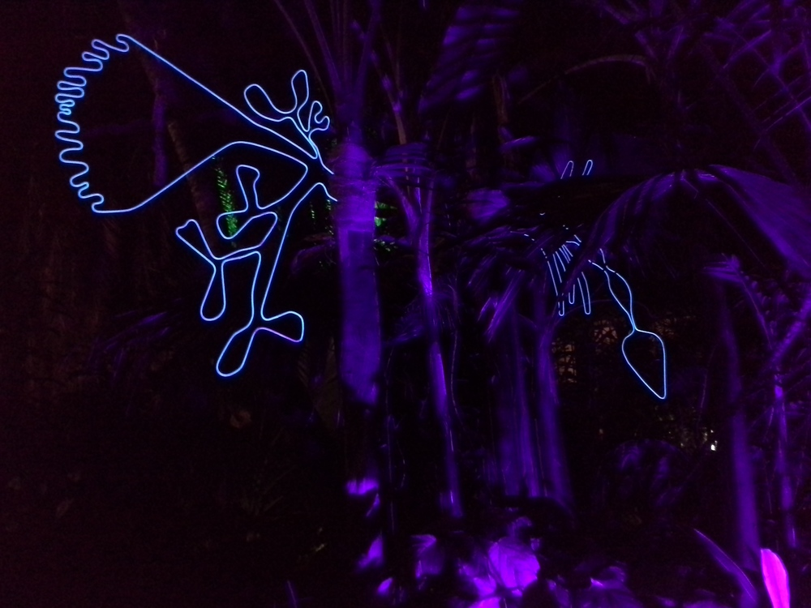
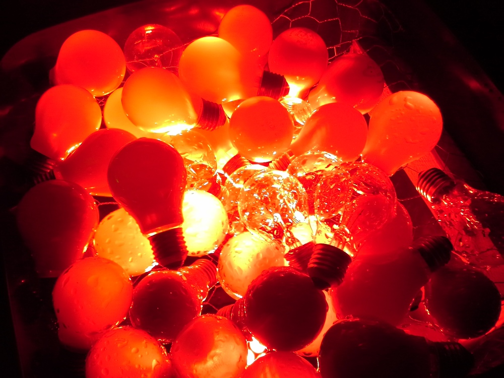
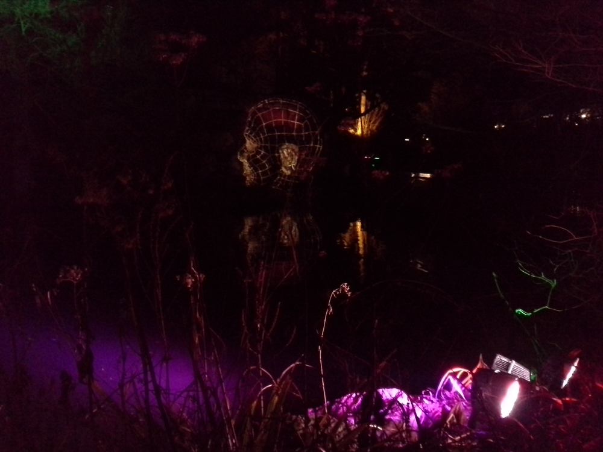
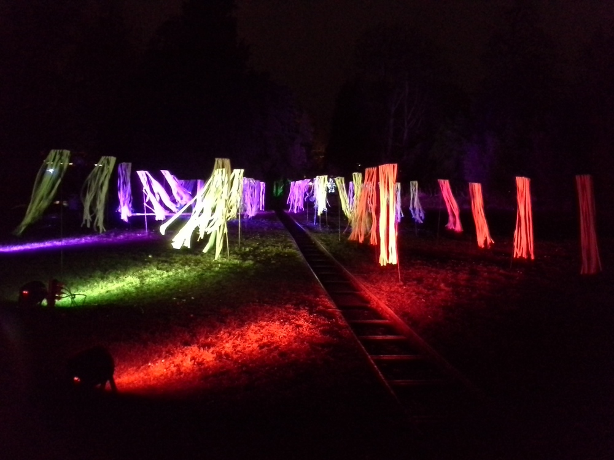

Mareike Hoksch
Schreibt über: #Kultur
Noch bis zum 24. Januar
Lichtinstallationen und Lichtfestivals sind ein weltweites Phänomen, das auch im Rhein-Main-Gebiet immer beliebter wird. Seit einigen Jahren schon versucht der Palmengarten speziell im Winter mit leuchtender Kunst Besucher anzulocken – mit Erfolg, wie man auch in diesem Jahr wieder beobachten kann.
Wer den Palmengarten bisher nur im Sommer besucht hat oder vom Rosen- und Lichterfest her eher überfüllt mit Partycharakter kennt, der kann bei den Winterlichtern eine weitere, deutlich ruhigere Facette dieser Frankfurter Institution erleben.
Die überschaubare Anzahl an Gästen verteilte sich bei meinem Besuch wunderbar, viele von Ihnen offenbar Amateurfotografen, die ungestört mit Ihren Stativen und Objektiven vor den Installationen herumhantieren konnten – ganz im Gegensatz etwa zur überfüllten Luminale, bei der man das teure Equipment vorher entweder gut versichert oder noch besser gleich zu Hause lässt.
Auch bei der diesjährigen Ausstellung gibt es einiges zu sehen: von gespenstischen Tüchern über Regenbogenpferde bis hin zum überdimensionalen Kopfumriss am See. Ein bisschen schade ist zwar, dass es kaum Informationen über die einzelnen Stationen und Künstler hinter der Ausstellung gibt. So lässt man sich allerdings auch noch eher treiben, flaniert durch den dunklen Garten und die Palmenhäuser und lässt sich hinter jeder Ecke aufs Neue überraschen.
Wem es dann nach ca. einer guten Stunde Spaziergang doch zu kalt wird, der kann sich im Anschluss bei einer (richtigen!) heißen Schokolade oder kleineren Snacks in der Galerie am Palmenhaus, beliefert vom benachbarten Caféhaus Siesmayer, wieder aufwärmen.
Für Kinder gibt es zusätzlich noch die „Märchenhütte“ im Vorraum der Galerie. In einer durchaus beeindruckenden Jurte können sich besonders Familien ausruhen und Märchenerzählern lauschen (kostet nichts extra). Ergänzend gab es außerdem bis Anfang Januar einen kostenfreien Poi-Workshop, bei dem in schwungvollen Bewegungen Leuchtbälle um den Körper gewirbelt werden. Dafür war ich dieses Mal leider zu spät dran, hoffentlich gibt es den Kurs nächstes Jahr wieder!
Fazit: Die Winterlichter-Reihe ist mittlerweile zu einer wirklich schönen Tradition geworden. Mit oder ohne Schnee, auf jeden Fall einen Spaziergang wert!
Noch bis zum 24.01.2016 habt ihr die Chance, euch die Ausstellung anzusehen.
Gewöhnlich schließt der Palmengarten seine Pforten gegen 17 Uhr, für die Winterlichter hat er aber bis 21 Uhr geöffnet. Der normale Eintritt (Erwachsene 7€, Kinder 2€) umfasst auch die Ausstellung.
   
Schreibt über: #Kultur
Ersten Kommentar schreiben